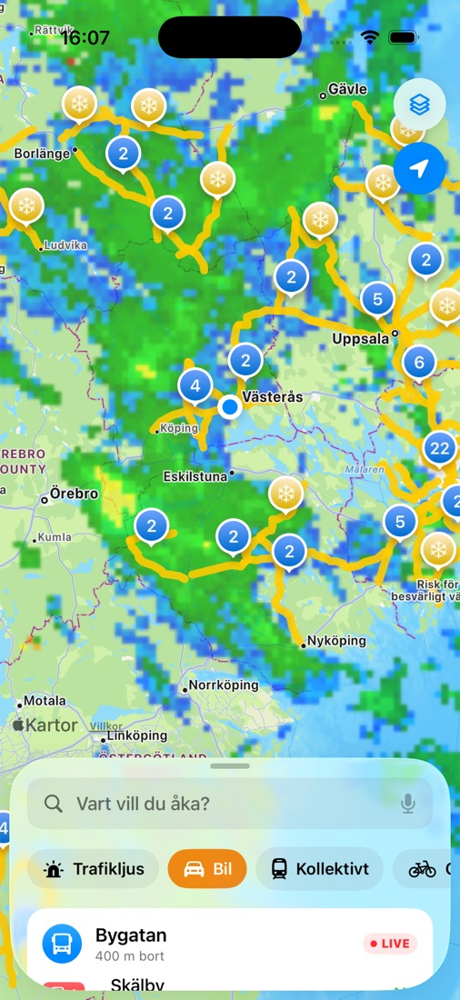

Швеція на одній карті, в реальному часі.
360Maps створено для подорожі Швецією. Знаходьте головні визначні місця, їздіть автобусами, поїздами й суднами, дивіться дорожній рух, погоду та паркування й отримуйте голосові підказки, 28 мовами, на iPhone.
Що ви бачите на карті
Вмикайте те, що вам потрібно. Усе походить із відкритих даних державних органів і транспортних операторів та оновлюється, поки ви дивитеся.
-
Визначні місця
Понад 340 визначних місць у Швеції з фото, годинами роботи, Look Around і коротким текстом вашою мовою. Фото походять із Wikimedia Commons, тексти — з Wikipedia.
-
Відібрані місця
Місця, які ми добираємо для відвідувачів, як-от італійські еспресо-бари, що їх радять італійці в Stockholm. Вони видимі завжди, незалежно від масштабу.
-
Ресторани, кафе та бари
Кожен свого кольору, з годинами роботи, а коли торкнутися групи таких місць — список. Близько 20 000 місць по всій Швеції.
-
Аптеки й невідкладна допомога
Аптеки та відділення невідкладної допомоги лікарень по всій Швеції, з годинами роботи. У надзвичайній ситуації телефонуйте 112.
-
Місця для купання, природа й північне сяйво
Пляжі з сьогоднішньою температурою води, національні парки, природні заповідники та ковзанки, а також шанс побачити північне сяйво.
-
Автобуси, метро, поїзди й судна
Транспорт рухається на карті з номером своєї лінії у 15 ленах. Червоний — автобус, синій — метро, фіолетовий — поїзд, бірюзовий — судно.
-
Затори й час у дорозі
Виміряний час у дорозі на головних дорогах і в тунелях Stockholm, щохвилини. Затор показано як +2 хвилини порівняно зі звичайним.
-
Стан доріг
Сніг, мокрий сніг і ожеледиця на дорогах показані лініями, із зазначенням того, що лежить на дорозі, і коли її розчищали.
-
Дощовий радар
Поточні опади за метеорадаром SMHI, кожні п’ять хвилин. Синій — слабкі, жовтий і червоний — сильні.
-
Збої та дорожні роботи
Аварії, перекриття та дорожні роботи від Шведської транспортної адміністрації, із зазначенням місця й часу.
-
Камери руху
Торкніться камери, щоб побачити дорогу. Зображення оновлюється саме, поки ви дивитеся.
-
Пороми й судна
Наступне відправлення поромних переправ Шведської транспортної адміністрації та судна, що рухаються морем.
-
Паркування біля мети
Коли плануєте поїздку авто, дивіться паркування поблизу місця, куди їдете, з кількістю місць і ціною. Вільні місця видно там, де місто ділиться такими даними.
-
Світлофори на дорозі
Де наступний світлофор, коли ви їдете. Колір і зворотний відлік з’являться, коли міста відкрито ділитимуться даними про свої сигнали.
-
Поліція, Krisinformation і SMHI
Події там, де ви перебуваєте, важливі повідомлення для населення та штормові попередження.
Як це виглядає
Знімки із застосунку з реальними даними. На скриншотах — шведська версія.





Від A до B
- Їхати
- Громадський транспорт
- Їхати велосипедом
- Іти
Оберіть, як хочете подорожувати. 360Maps порівнює маршрути з урахуванням руху просто зараз і показує, що є на шляху: затори, стан доріг, дорожні роботи, пороми та світлофори. Громадським транспортом ви отримуєте відправлення, затримки та пересадки по всій Швеції.
Під час поїздки авто, велосипедом або пішки наступний поворот озвучується, навіть коли екран заблоковано. Якщо ви повернули не туди, застосунок знаходить новий маршрут, а якщо знаходить швидший щонайменше на три хвилини, повідомляє про це. Біля мети ви бачите, де припаркуватися.
Екскурсія на день

Здивуй мене
Застосунок планує день від місця, де ви перебуваєте: визначні місця й парки, з обідом і кавою в місцях, які відчинені. Оберіть піший маршрут, велосипед або громадський транспорт і перемішуйте варіанти, доки день вам не сподобається.
Музеї, палаци й церкви ставляться до 17:00, бо застосунок не знає годин їхньої роботи.
Поспішаєте на автобус чи поїзд? Торкніться відправлення й виберіть «Доставити вчасно», і застосунок підкаже, коли виходити.
Корисно знати про Швецію
Номери екстреної допомоги за один дотик, сьогоднішні схід і захід сонця, шведські свята і що в них зачиняється, оплата і чайові, Systembolaget, водопровідна вода, розетки та право вільного доступу до природи. Із конвертером у крони за курсом Європейського центрального банку та дванадцятьма шведськими фразами, які озвучуються, зі значенням вашою мовою.
Ввечері застосунок показує музеї та визначні місця поблизу, які ще відчинені, а коли наближається дощ, музеї та церкви, куди можна піти натомість. Місця з безкоштовним входом позначено.
Безкоштовно та 360Maps Plus
Карта з усіма шарами, пошук, громадський транспорт, велосипед, піші маршрути, «Здивуй мене» та планування маршруту авто безкоштовні. Перші три поїздки з навігацією авто також безкоштовні.
З 360Maps Plus ви отримуєте навігацію авто: кожен поворот голосом, попередження про затори, ожеледицю та дорожні роботи, а також новий маршрут, коли рух змінюється. А ще таке:

Скільки коштує поїздка, і зимова перевірка
Збір за затори та плата за проїзд мостами на вашому маршруті авто, розраховані на час, коли ви проїжджатимете, і скільки це коштуватиме, якщо виїхати пізніше.
З 1 листопада до 30 квітня: ожеледиця й сніг дорогою, температура там, де ви опинитеся, коли приїдете, та попередження SMHI.

Правила паркування в Stockholm
Наблизьте карту, і бордюри забарвлюються: зелений — де можна паркуватися, помаранчевий — де вулицю прибиратимуть протягом доби, червоний — де паркування зараз заборонене, сірий — де місце зарезервоване.
За правилами міста. Діють знаки на вулиці.

Де стоїть авто
Збережіть, де стоїть авто, і застосунок покаже, що діє саме там: поточну ціну, повний тариф і коли прибирають вулицю.
«Нагадати» надсилає сповіщення ввечері напередодні та за годину до початку прибирання вулиці.
Plus доступний на один тиждень (це не підписка), на місяць, на рік або як одноразова покупка. App Store показує ціну у вашій країні. Умови використання.
Відкриті дані
Усе на карті походить із відкритих даних шведських органів влади та транспортних компаній.
Серед джерел: Trafiklab і Samtrafiken, SL, Шведська транспортна адміністрація, SMHI, Шведська поліція, Krisinformation.se, місто Stockholm, Wikipedia та © OpenStreetMap contributors. Усі джерела й ліцензії наведено в застосунку, у розділі «Джерела, ліцензії та конфіденційність».
Підтримка
Знайшли помилку, не вистачає чогось на карті чи маєте запитання про застосунок? Напишіть на raztechsupport@icloud.com, і ми відповімо. Відповіді на поширені запитання є на сторінці підтримки.